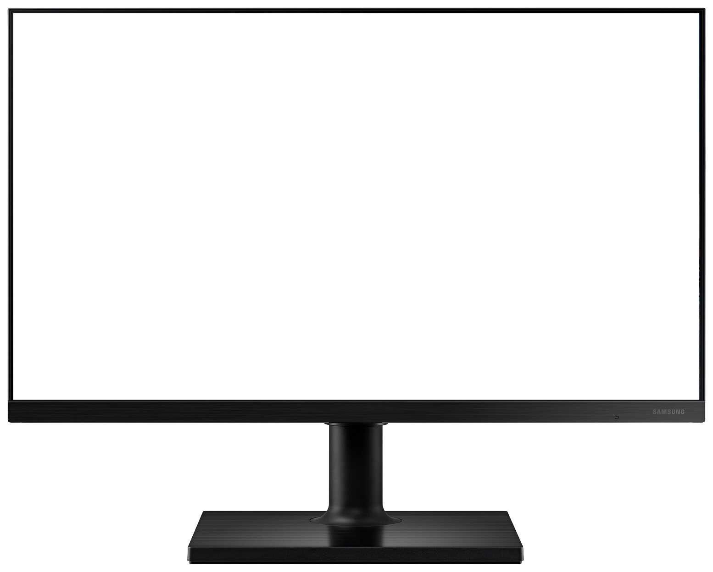

<!--  -->

<swiper
  [effect]="'coverflow'"
  [grabCursor]="true"
  [centeredSlides]="true"
  [slidesPerView]="'auto'"
  [coverflowEffect]="{
    rotate: 50,
    stretch: 0,
    depth: 100,
    modifier: 1,
    slideShadows: true
  }"
  [loop]="true"
  [pagination]="{ clickable: true }"
  class="mySwiper"
>
  <ng-template swiperSlide *ngFor="let project of listProjects">
    <div class="card_image">
      
    </div>
    <div class="detail">
      <div class="text">
        <strong class="f-28">{{ project.name }}</strong>
        <p>{{ project.technology }} - {{ project.hosted }}</p>
      </div>
      <div class="link">
        <a aria-label="link projeto" [href]="project.link" target="_blank">  {{ "access" | translate }} </a>
        <a aria-label="link do codigo no Github" [href]="project.link_project" target="_blank">
          <i icon="icon_github" class="icon_color"></i>
        </a>
      </div>
    </div>
    <span class="shadow"></span>
  </ng-template>

</swiper>

